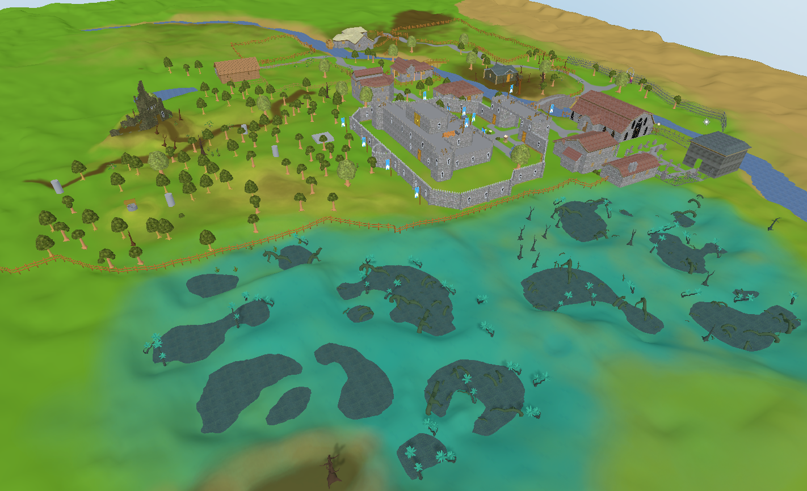
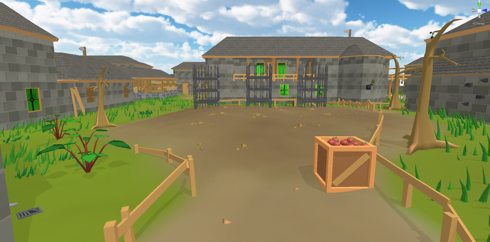

We are not the developers of this project and do not state any ownership of the project whatsoever.
A brand new project has come out which will blow the socks off your feet like it has mine! Imagine walking around your favorite Runescape
cities and being able to Interact with the world around you! Now you can with a brand new group of mods for the VR Game Blade and Sorcery.
It had all started with an artist named Connor who was just trying to dive into projects to work on his 3D modeling. He had released the map for Varrok
free of charge! and then more maps started taking off and more artists began to join in with him. Famous Youtubers like SoupRS had made videos about these
maps and I thought that everyone in the 09 community could appreciate it since these guys have gone out your way to not bring the game to you but bring you
into the game!

The current project is working to bring all of these maps together as one big map to explore as if you would in the game. But that is still a bit a way and there
are really cool maps that you can hop in and out of using Blade and Sorcery's map system. With the physics of the B&S engine you are able to maneuver around the maps
pretty well and even do osrs-like things like roof-top agility or picking up pots in general stores and trashing the place. Taking a stroll around lumbridge in vr
is surreal that you may never want to leave! If you are interested in the maps I will leave links to the maps below.
The Beautiful Varrock Map
